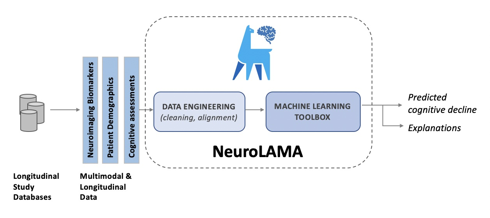

Neuro Data Sciencey

We come to NeuroDataSciencey, a resource providing machine learning software for analyzing neuroscience data,
with a focus on neurodegenerative conditions like Alzheimer's disease.
NeuroDataSciencey:
Is an open resource, with all software available free to investigators
It is intended to be extensible, in terms of advanced machine-learning algorithms being progressively added by the resource developers, as well as the community
The resource does not provide data, rather the analysis software is compatible with prominent Neuroscience research datasets
Our focus is on Alzheimer's and related Cognitive Decline conditions
Packages
-
NeuroLAMA: Neuro Longitudinal and Multimodal Analysis System
NeuroDataSciencey is a resource created and maintained by Rayan Ashish